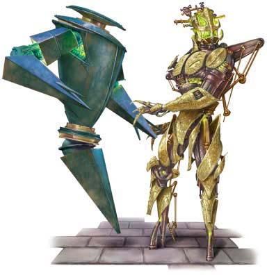

制裁者是一种构装生物，其唯一使命是维护宇宙的自然法则。它们追捕那些违反特定法则的目标――这些法则被制裁者视为不可亵渎的存在。制裁者分为多种类型，每一种都专为执行特定任务而定制。
制裁者说深渊语，天界语，炼狱语以及它们第一个目标的母语。
除非威胁到其自身安全，制裁者会完完全全地专注于其目标，完全忽视其他战斗人员的存在。制裁者可能会攻击任何阻碍它的人，但它若能再次着手于其目标的话则不会多做停留。
构装生物特性（Construct Traits）：制裁者免疫影响心灵效应、毒素、睡眠、麻痹、震慑、疾病、死亡效果、死灵系效应以及所有需要强韧检定的效果（除非此效果也会对物体生效）。它们不会受到重击、非致命伤害、属性伤害、属性吸取、能量吸取且不会因巨创而死亡。制裁者无法自行回复伤害，但可通过修复手段恢复生命值；且无法被复活或复生。制裁者拥有60英尺黑暗视觉。
快速医疗（Fast Healing）（Ex）：只要生命值不低于1点，制裁者每回合可恢复一定生命值。该能力无法恢复因饥饿、口渴或窒息损失的生命值，也无法再生或重新接合被摧毁的躯体部位。受祝福的武器（译注：可能是指祝福武器Bless Weapon法术）或混乱阵营武器造成的伤害仅能以正常速度愈合。
中型构装生物（跨位面，守序）

| 生命骰： | 18d10+20（119 hp） |
| 先攻： | +5 |
| 速度： | 50英尺 |
| 防御等级： | 31（+1敏捷，+7半身甲，+13天生），接触11，措手不及30 |
| 基本攻击／擒抱： | +13/+18 |
| 攻击： | 挥击 +18 近战 |
| 全力攻击： | 2挥击 +18 近战 |
| 伤害： | 挥击 3d6+5 |
| 面宽／触及： | 5英尺/5英尺 |
| 特殊攻击： | 类法术能力 |
| 特殊能力： | 构装生物特性，伤害减免40/+4（译注：3r升级为15/混乱和精金），快速医疗15，法术抗力28 |
| 豁免： | 强韧+6，反射+7，意志+9 |
| 属性： | 力量20，敏捷13，体质―，智力14，感知17，魅力20 |
| 技能： | 知识（神秘）+26，聆听+26，法术辨识+28，侦察+26 |
| 专长： | 警觉，盲斗，战斗施法，战斗反射，精通先攻，技能专攻（知识[神秘]），技能专攻（法术辨识） |
| 地域： | 任何陆地及地下（机械境） |
| 组织： | 单独 |
| 挑战等级： | 17 |
| 宝物： | 无 |
| 阵营： | 总是守序中立 |
| 进化： | 19�C24 HD（中型）；25�C54 HD（大型） |
时衡者是现存最强大的制裁者之一。他们守护着世间最珍贵却又最脆弱的两样存在：时间与空间。凭借着对时间与空间的非凡感知力，时衡者能了解时空连续体遭受的破坏行为何时发生，继而追捕肇事者。
时衡者虽具人形，却也仅止于形态相似。与大多数制裁者一样，时衡者拥有一个机械的身躯，由精密的齿轮与活塞构成，体内运转者无数的微型时计与沙漏。时衡者身着蚀刻各种时间符文的极其精细的半身甲。他们头部位置则被一个持续流动的沙漏所取代。有时，沙漏内的沙子似乎在向上流动；从未有时衡者解释过这是为什么。
时衡者重点关注使用有限祈愿术、神迹术、永恒静滞、时间静止和祈愿术等强大法术的施法者。在时衡者看来，使用这类法术会毁灭宇宙，危及众生。尽管时衡者对使用这些法术和能力的施法者不满，他们自身却可毫无顾忌地使用其中大部分法术。
时衡者会试图通过永恒静滞能力将违规者囚禁于时间静滞结界中，以此迅速结束战斗。
类法术能力（Spell-Like Abilities）：随意施展――毁灭法阵（circle of doom，3r升级为群体造成轻伤Inflict Light Wounds, Mass）、任意门、支配人类、高等解除魔法（greater dispelling，3r升级为Dispel Magic, Greater）、加速术、怪物定身术、生物定位术（locate person，没有在3e phb中找到，猜测可能是locate creature）、真知术； 3次/日――永恒静滞； 1次/日――死亡法阵、力场监牢、有限祈愿术、正义烙印、高等传送术（仅自身及最大负重物品）（teleport without error，3r升级为Teleport, Greater）、时间静止； 1次/周――指使术、异界传送。
施法者等级18级；豁免DC为15+法术等级。
快速医疗（Fast Healing）（Ex）：时衡者每回合恢复15点生命值。此能力无法恢复因饥饿、口渴或窒息损失的生命值，也无法再生或重新接合被摧毁的躯体部位。
大型构装生物（跨位面，守序）
| 生命骰： | 22d10+30（151 hp） |
| 先攻： | +6 |
| 速度： | 50英尺，飞行50英尺（良好） |
| 防御等级： | 35（-1体型，+2敏捷，+8全身甲，+16天生），接触12，措手不及33 |
| 基本攻击／擒抱： | +16/+26 |
| 攻击： | 挥击 +21 近战 |
| 全力攻击： | 2次挥击 +21 近战 |
| 伤害： | 挥击 2d10+6 |
| 面宽／触及： | 10英尺/10英尺 |
| 特殊攻击： | 驱散爆发，类法术能力 |
| 特殊能力： | 构装生物特性，伤害减免50/+5（译注：3r升级为20/混乱和精金），快速医疗20，法术抗力30 |
| 豁免： | 强韧+9，反射+11，意志+13 |
| 属性： | 力量22，敏捷15，体质―，智力18，感知19，魅力22 |
| 技能： | 解读文书+29，知识（神秘）+31，知识（历史）+31，知识（宗教）+31，知识（位面）+29，法术辨识+33，生存+4（其他位面+6） |
| 专长： | 强韧加强，精通先攻，钢铁意志，闪电反射，技能专攻（知识[神秘]），技能专攻（知识[历史]），技能专攻（知识[宗教]），技能专攻（法术辨识） |
| 地域： | 任何陆地及地下（机械境） |
| 组织： | 单独 |
| 挑战等级： | 19 |
| 宝物： | 无 |
| 阵营： | 总是守序中立 |
| 进化： | 23�C33 HD（大型）；34�C66 HD（超大型） |
神卫者是神�o的捍卫者。尽管制裁者本身不信仰任何存在，但它们理解这些神性存在的必要性，并深知神�o的陨落只会为宇宙带来混沌。它们追捕那些企图篡夺神力的凡人。
神卫者是外形抽象的大型人形构装生物，其躯体由块状的精密机械装置构成，金属框架内偶尔可见类似行星与星系的微小球体运转。它们不为特定神�o服务，曾捍卫过所有神系、道德观与伦理体系。
神卫者通常先多次释放驱散爆发削弱目标，继而以其他法术轰击，最终以物理攻击终结目标。
解魔爆发（Dispelling Blast）（Sp）：每日3次，以一个标准动作释放负能量爆发，效果如同高等解除魔法（greater dispelling，3r升级为Dispel Magic, Greater），但影响30英尺爆发范围内的所有目标。施法者等级19级。
类法术能力（Spell-Like Abilities）：随意施展――死亡法阵、毁灭法阵（circle of doom，3r升级为群体造成轻伤Inflict Light Wounds, Mass）、任意门、支配怪物、加速术、怪物定身术、生物定位术（locate person，没有在3e phb中找到，猜测可能是locate creature）、真知术； 3次/日――力场监牢、有限祈愿术、正义烙印、高等传送术（仅自身及最大负重物品）（teleport without error，3r升级为Teleport, Greater）、时间静止； 1次/日――指使术、流星爆、异界传送、缚魂术、祈愿术。
施法者等级19级；豁免DC为16+法术等级。
快速医疗（Fast Healing）（Ex）：神卫者每回合恢复20点生命值。此能力无法恢复因饥饿、口渴或窒息损失的生命值，也无法再生或重新接合被摧毁的躯体部位。